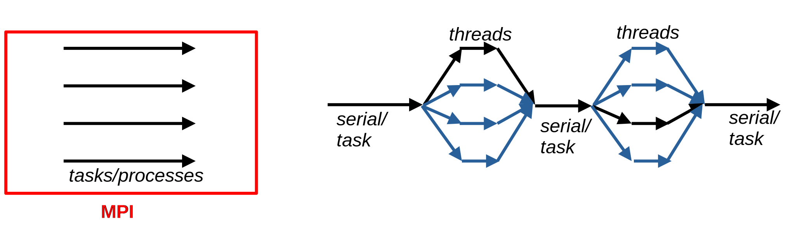
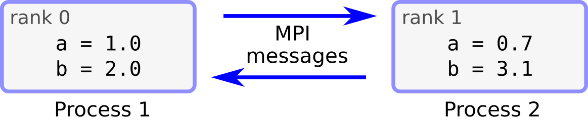

Parallel programming with MPI, part I
ESiWACE3-WarmWorld Summer School on HPC for Climate and Weather Applications
Contents for parts I & II
Two lectures + two exercise sessions; examples and exercises in Fortran
The basic premise for parallel computing and the key programming models
Distributed memory computing and the Message Passing Interface (MPI): why is it needed
- How to exchange information between processes
- Part I: simple communication between specific processes/CPUs
- Part II: Continue on process-to-process communication + collective communication (simultaneously across a range of processes)
Learning objectives, part I
Understand the key concepts of parallel computing
Know the difference between distributed and shared memory computing
Understand the baseline concept of MPI
Ability to write simple programs with process-to-process MPI communication
Parallel computing
Parallel computing
- Concept
- Divide large problem into smaller subtasks performed simultaneously
- Structures in parallel computing
Task parallelism

Data parallelism

Parallel computing
- Real vs ideal scaling
- Overhead: operations introduced by the parallel computing framework
- Load imbalance: Uneven workload between processing units

- Weak vs strong scaling: Increased parallelism associated with increasing problem size vs faster execution
Programming models
Programming models
Simultaneous execution of processes or threads on different CPU cores
- Processes/tasks
- Message passing interface (MPI)
- Distributed memory computing, multi-node platforms
- Interaction based on explicit messages
- Threads
- OpenMP (+ others)
- Interaction through shared memory
- No direct access to threads running on another process and/or node
- Processes/tasks
Programming models
- Distributed vs shared memory computation
- Processes vs Threads
Programming models
- Distributed vs shared memory computation
- Processes vs Threads

MPI Premise
- Problem divided into multiple processes
- Each has its own memory space
- Explicit communication needed to share data between processes

MPI processes
Independent execution of the same program code by multiple processes
Each process has a unique rank ID (0 … N-1)
Different ranks can work on different tasks and/or different data
The MPI standard
- Different vendors implementing the standard
- MPICH, openMPI, Cray …
Portability – works on a variety of platforms
Since 1994, latest version of the standard 4.1 (2023)
The API
- Communcation routines
- Execution control - synchronization
- Advanced features
- User defined datatypes
- Communication topologies; custom communicators
- == A Lot of stuff, but meaningful solutions can be built with a handful of tools
Things to come
We’re going to give You the keys to the Lamborghini
Things to come
We’re going to give You the keys to the Lamborghini
…but you’re going to have to drive it!
MPI programming
Compiling and executing MPI programs
- MPI implementations ship with the API library + executables
- Wrappers for compilers - mpicc, mpicxx, mpif90, mpifort …
- Include necessary options and links automatically
- Wrappers for compilers - mpicc, mpicxx, mpif90, mpifort …
- Launch on Linux workstations: mpiexec, mpirun …
Compiling and executing MPI programs
Levante HPC system at DKRZ
- Compiler with Intel environment: mpiifort
- Slurm job scheduling system
- Allocate resources on compute nodes + srun
- Submit a batch job script (templates provided in exercises)
First MPI program
First MPI program
- MPI program always starts/finishes with
MPI_Init/MPI_Finalize
Code executed by each process independently, unless including process-specific branching
Presentation syntax
- MPI calls are presented for the Fortran interface
- Very similar in C
- MPI_Function(
arg1,arg2) arg1- Inputs given in red
arg2- Outputs given in blue
MPI_Comm_size
- Return the total number of processes
- MPI_Comm_size(
comm,size,err) - integer
comm - Communicator
- integer
- integer
size - Number of processes in the communicator
- integer
- integer
err - Error status
- integer
MPI_Comm_rank
- Return the rank id (integer) of the calling process
- MPI_Comm_rank(
comm,rank,err) - integer
comm - Communicator
- integer
- integer
rank - Rank of the calling process
- integer
- integer
err - Error status
- integer
MPI Communicator
MPI communicator
- An object connecting a group of processes
- MPI_COMM_WORLD (includes all tasks in the invoked program)
- Carry information about the number of processes and process ranks
- Possible to define custom communicators for other purposes
MPI communication
Types of MPI communication
- Point-to-point communication
- Collective communication
- (One-sided communication)
- Blocking communication
- Functions do not return until communication procedure is complete
- Non-blocking communication
- Return immediately, communication in the background
Point-to-point communication (blocking)
- Send and receive messages between two processes – Must have corresponding calls
- MPI_Send(
buf,count,datatype,dest,tag,comm,err) - type(*)
buf(..) - Data send to another process
- type(*)
- integer
count - Number of elements in the data
- integer
- integer
datatype - Datatype of the elements in buf
- integer
- integer
dest - Rank of the receiving process
- integer
- integer
tag - An integer identifier for the msg
- integer
- integer
comm - Communicator
- integer
- integer
err - Error status
- integer
Point-to-point communication (blocking)
- MPI_Recv(
buf,count,datatype,source,tag,comm,status,err) - type(*)
buf(..) - Data received from another process
- type(*)
- integer
count - Number of elements in the data
- integer
- integer
datatype - Datatype of the elements in buf
- integer
- integer
source - Rank of the source process
- integer
- integer
tag - An integer identifier for the msg
- integer
- integer
comm - Communicator
- integer
- integer
status(MPI_STATUS_SIZE) - Information about the received msg
- integer
- integer
err - Error status
- integer
Point-to-point communication (blocking)
Blocking MPI communications: Other considerations
Buffersshould be continuous blocks in memory- Deadlocks
The order of
MPI_SendandMPI_Recvcalls can be criticalProcesses expecting
MPI_Recv, while there is a missmatch withMPI_Sends → execution gets stuckE.g. all processes try to send, while none get to receive
Combined send/recv
MPI_Sendrecv(sendbuf,sendcount,sendtype,dest,sendtag,recvbuf, recvcount,recvtype,source,recvtag,comm,status,err)
Simultaneous send/recv → reduce risk for deadlocks
Destination and source ranks can be the same or different
Summary
MPI provides a standard for parallel computing in distributed memory platforms
Independent execution of the program code by each MPI process
MPI processes held by a communicator object
Explicit send/receive calls to exchange data between specific processes